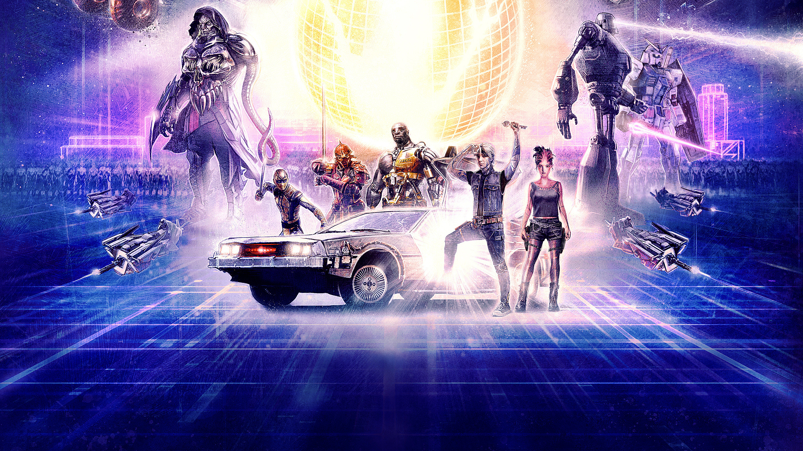

Ready Player One
Story :
In 2045, people seek to escape from reality through a virtual reality entertainment universe called the OASIS (Ontologically Anthropocentric Sensory Immersive Simulation), created by James Halliday and Ogden Morrow of Gregarious Games. After Halliday's death, a pre-recorded message left by his avatar Anorak announces a game, granting ownership of the OASIS to the first to find the golden Easter egg within it, which gets locked behind a gate requiring three keys which players can obtain by accomplishing three challenges. The contest has lured several "Gunters", or egg hunters, and the interest of Nolan Sorrento, the CEO of Innovative Online Industries (IOI) who seeks to control the OASIS himself by inserting intrusive online advertising. IOI uses an army of indentured servants, and employees called "Sixers" to find the egg.
Teenage orphan Wade Watts' avatar Parzival, an avid Gunter, participates in the first challenge, an unbeatable race, along with his best friend Aech, and Art3mis, a female avatar on whom Parzival has a crush. Parzival regularly visits Halliday's Journals, a simulated archive of Halliday's life and hobbies run by the Curator. Wade receives the Copper Key from Anorak after he wins by driving backward, while Art3mis, Aech, and his friends Daito and Sho, all win the race afterward, later being collectively named the High-5 on the OASIS' scoreboard.
Sorrento asks mercenary i-R0k to learn Wade's true identity, intending to bribe him to win the contest on IOI's behalf. Wade and Art3mis discover from the Journals that Halliday once dated Morrow's wife Karen "Kira" Underwood. Wade and Art3mis visit the Distracted Globe night club to look for clues where Wade confesses his love and true name to Art3mis. They survive an IOI raid in which Art3mis abandons Wade, explaining that her father died in debt to IOI. i-R0k, who was eavesdropping on their conversation, informs Sorrento of his findings. Sorrento contacts Wade with his offer. When rejected, Sorrento bombs Wade's home, killing his aunt Alice and her boyfriend Rick among others.
Art3mis' player Samantha Cook takes Wade in. Together, they realize the second challenge relates to Halliday's regret of not pursuing a relationship with Kira. Along with Aech, Daito, and Sho, Parzival and Art3mis search for the recreation of the Overlook Hotel. Art3mis asks Kira to dance and wins the Jade Key. Sorrento's subordinate F'Nale Zandor storms the Gunters' hideout and captures Samantha to pay off her father's debt. Wade escapes with the help of the other High-5 users, Helen Harris (Aech), Toshiro (Daito), and Zhou (Sho) in Helen's truck. Samantha escapes confinement after Aech and Parzival hack Sorrento's OASIS rig with Aech recording his confession of the bombing.
The third challenge is found in Castle Anorak on Planet Doom, where players must guess Halliday's favorite Atari 2600 game to earn the Crystal Key. i-R0k places a forcefield around the castle using the Orb of Osuvox, but Art3mis soon disables it. The High-5 lead an army of OASIS players against IOI's forces. Parzival kills Samantha's avatar, allowing her to flee IOI with the High-5 picking her up nearby. Parzival and Sorrento fight in the OASIS with Sorrento detonating the Cataclyst bomb, wiping out every avatar on Planet Doom including himself.
Parzival respawns using an extra life coin given to him earlier by the Curator in a bet. He plays Adventure, winning the Crystal Key by locating Warren Robinett's Easter egg. He uses the three keys to enter a treasure room, where Anorak offers him a contract to sign. Parzival recognizes it as the one Morrow signed when Halliday forced him out of Gregarious Games and refuses to sign it. Anorak transforms into Halliday who expresses his regrets in life and awards Parzival the Easter egg.
Sorrento and F'Nale are arrested for the bombing as Morrow appears, revealing himself as the Curator. Wade decides to run the OASIS with the High-5, inviting Morrow to join them as a consultant. As the IOI Loyalty Centers are shut down, the High-5 make the controversial choice to close the OASIS every Tuesday and Thursday for people to spend more time in the real world, including Wade and Samantha, who start a relationship.
